![]()
library(here)
library(mblabs)
library(lubridate)
library(ggplot2)
library(raster)
library(scales)
library(data.table)
library(zoo)
library(rnoaa)
theme_labs_on()
pal2 <- alpha(unname(pal[c("blue", "purple")]), .8)
load(here("./_data/2020-burn_olam_usa_07.RData"))While estimating winter season frost risk for almond orchards over Central California, project partners reported significant discrepancies between modeled-based temperature estimates provided by ERA5-LAND Reanalysis dataset and ground observations from meteo stations. These biases impact the calculation of daily Frost-Degree-Day index (FDD) used to price insurance coverage.
In this analysis we look into more details at ERA5-LAND temperature estimate biases against ground observations collected from NOAA GHCN network of meteorological stations. In particular:
- Can we justify Y2017 correction to ERA5-LAND hourly temperature grids over OLAM portfolio?
- Can we perform a portfolio-wide ERA5-LAND temperature validation against NOAA GHCN ground records?
This work was initially produced for WorldCover PBC and OLAM US in early 2021, and redacted here to omit confidential details.
# Clear workspace, keep only portfolio details
load(here("./_data/2020-burn_olam_usa_06.RData"))
rm(list=setdiff(ls(), c("dir", "pts.dt", "dt.era", "dt.imp")))
pts <- SpatialPointsDataFrame(pts.dt[, .(X,Y)], data.frame(pts.dt),
proj4string=CRS("+init=epsg:4326"))# Get GHCN ground obs across ZOI
stations <- ghcnd_stations()
setDT(stations)
vars <- c("PRCP", "TAVG", "TMAX", "TMIN")
stations[element %in% vars, .N, by=element]
stations <- stations[state=="CA" & element %in% vars]
# Convert to spatial
stations.sp <- SpatialPointsDataFrame(stations[, .(longitude, latitude)], stations,
proj4string=CRS("+init=epsg:4326"))
# Keep only stations within 30 km of any OLAM site
pts <- spTransform(pts, CRS("+init=epsg:3310"))
stations.sp <- spTransform(stations.sp, CRS("+init=epsg:3310"))
dist <- rgeos::gWithinDistance(stations.sp, pts, dist=30*1000, byid=TRUE)
dist <- colSums(dist)
names(dist) <- stations.sp$id
dist <- dist[dist>0]
ids <- names(dist)
pts <- spTransform(pts, CRS("+init=epsg:4326"))
stations.sp <- spTransform(stations.sp, CRS("+init=epsg:4326"))
plot(extent(pts), lty=2, col=NA, xlab=NA, ylab=NA)
plot(stations.sp[stations.sp$id %in% ids,], col="black", add=T)
plot(pts, col="blue", pch="*", add=T)
ids <- stations[id %in% ids & element %in% vars & last_year > 2009, unique(id)]
stations[id %in% ids & element %in% vars]
# Get daily station time-series for the 29 selected
# Request seems to time out when too large so let's batch it
stations.dt <- lapply(ids, function(x)
try(ghcnd_search(x, var=vars, date_min="2010-01-01", refresh=T)))
stations.dt <- stations.dt[sapply(stations.dt, function(x) class(x)!="try-error")]
stations.dt <- do.call(c, stations.dt)
stations.dt <- lapply(stations.dt, function(x) setnames(x, 2, "value"))
stations.dt <- rbindlist(stations.dt, idcol="var")
stations.dt[, .N, by=var]
par(mfrow=c(2,2))
for(i in stations.dt[, unique(var)]) stations.dt[var==i, hist(value, main=i)]
par(mfrow=c(1,1))
# Convert tenths of degrees Celsius to °C
stations.dt[, value := as.numeric(value)
][var %in% tolower(vars[2:4]), value := value/10]
ids <- stations.dt[, unique(id)]# Extract ERA5 at stations coordinates
x <- c("2010-01-01", "2020-07-31")
cat <- wc_catalog(x, code="era5_temp_h_usa_ca")
dt <- wc_extract(
stations[id %in% ids, .N, by=.(loc_id=id, X=longitude, Y=latitude)][, N:=NULL],
catalog=cat)
# Verify sequence
dt[c(1, .N), .(date, time)]
dt[, .N, by=.(y=year(date), loc_id)][N!=8760 & N!=8784 & N!=5112]
# => OK
dt[,
# Apply timezone
time := with_tz(as.POSIXct(paste(date, time, sep=" ")), tzone="America/Los_Angeles")
][, `:=`(
# Convert to IDate
date = as.IDate(time),
time = as.ITime(time)
)]
# Verify
dt[c(1, .N), .(date, time)]
dt[, .N, by=loc_id][, uniqueN(N)]
dt[, hist(value)]
dt[, summary(value)]
# Min. 1st Qu. Median Mean 3rd Qu. Max.
# -6.623 10.852 17.053 17.939 24.544 43.893
# Daily
dt <- dt[, .(
Tmean = mean(value, na.rm=T),
Tmin = min(value, na.rm=T),
Tmax = max(value, na.rm=T)
), keyby=.(loc_id, date)]
# Combine with GHCN
tmp <- dcast(stations.dt, id+date~var, value.var="value")
dt[tmp, on=.(loc_id=id, date=date), `:=`(
GHCN_Tmean = i.tavg,
GHCN_Tmin = i.tmin,
GHCN_Tmax = i.tmax
)]rm(x, i, j, t, tmp)
save.image(here("./_data/2020-burn_olam_usa_07.RData"))Results
10-year comparisons between ERA5-LAND and GHCN station network observations over Feb-March risk period. 11 stations (under 30-km from almond production sites and with daily temperature records after 2010) are selected for this comparison.
library(terra)
r <- rast(here("_data/daily_2020-02-01.nc"))
plot(r[[1]], ext=ext(stations.sp[stations.sp$id %in% ids,]) + c(1,1,0,0),
col=terrain.colors(20), ylab=names(r)[1],
main="Hourly Tmean (°C) - ERA5 2020-02-01 00:00")
grid()
plot(crop(stations.sp[!stations.sp$id %in% ids,], pts), col=pal["dark"], add=T)
plot(stations.sp[stations.sp$id %in% ids,], col="red", add=T)
plot(pts, col=pal["blue"], pch="*", add=T)
plot(pts[pts$loc_id==25,], col=pal["blue"], pch=1, cex=2, add=T)
legend("bottom", bg=pal["light"], cex=.8,
legend=c("GHCN station", "GHCN station ≤ 30-km", "OLAM production site", "Main site"),
col=pal[c("dark", "red", "blue", "blue")], pch=c("+", "+", "*", "o"))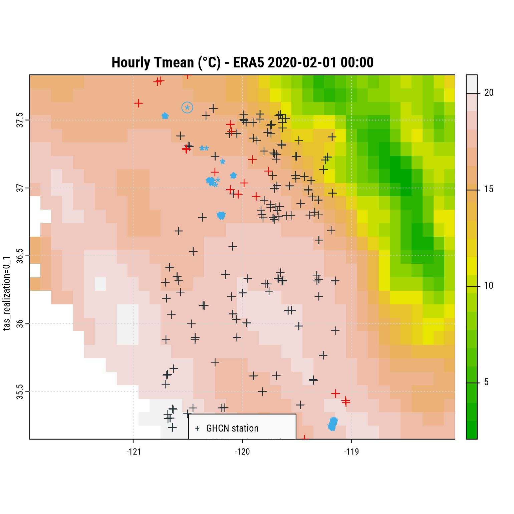
List of GHCN stations retained in the analysis.
stations[id %in% ids & element %in% c("TMIN", "TAVG"), .(
first_year, last_year
), keyby=.(id, name, element)] |> knitr::kable()| id | name | element | first_year | last_year |
|---|---|---|---|---|
| USC00040444 | BAKERSFIELD 5 NW | TMIN | 1999 | 2020 |
| USC00045233 | MADERA | TMIN | 1928 | 2020 |
| USC00045532 | MERCED | TMIN | 1899 | 2020 |
| USC00048122 | SHAFTER 6E | TMIN | 2009 | 2020 |
| USC00048752 | TAFT | TMIN | 1994 | 2011 |
| USR0000CCAT | CATHEYS VALLEY CALIFORNIA | TAVG | 1999 | 2020 |
| USR0000CCAT | CATHEYS VALLEY CALIFORNIA | TMIN | 1999 | 2020 |
| USR0000CGSP | GREEN SPRING CALIFORNIA | TAVG | 1990 | 2020 |
| USR0000CGSP | GREEN SPRING CALIFORNIA | TMIN | 1990 | 2020 |
| USW00023155 | BAKERSFIELD AP | TAVG | 1998 | 2020 |
| USW00023155 | BAKERSFIELD AP | TMIN | 1937 | 2020 |
| USW00023257 | MERCED MUNI AP | TAVG | 1998 | 2005 |
| USW00023257 | MERCED MUNI AP | TMIN | 1998 | 2020 |
| USW00023258 | MODESTO CITY CO AP | TAVG | 1998 | 2005 |
| USW00023258 | MODESTO CITY CO AP | TMIN | 1927 | 2020 |
| USW00093242 | MADERA MUNI AP | TAVG | 1998 | 2005 |
| USW00093242 | MADERA MUNI AP | TMIN | 1998 | 2020 |
10-year summary.
for(i in stations.dt[, unique(var)]) stations.dt[var==i,
hist(value, main=i, xlab=NA, col=pal2[2], border=pal["light"])]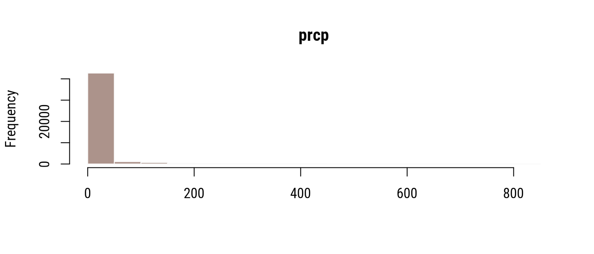
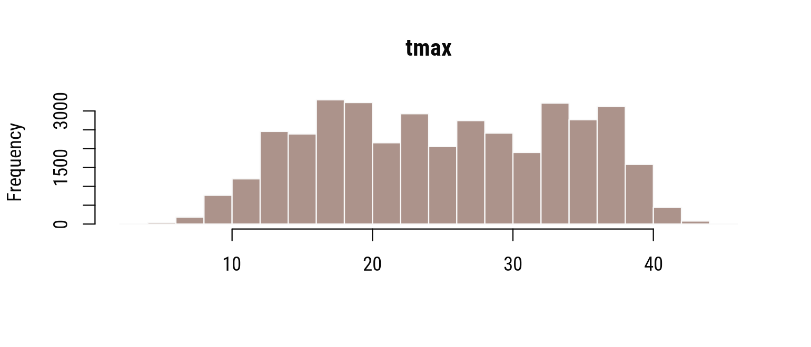
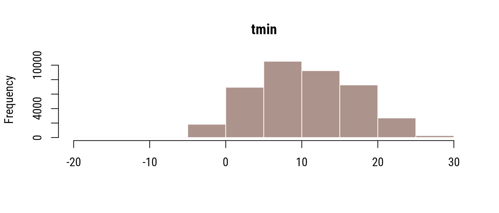
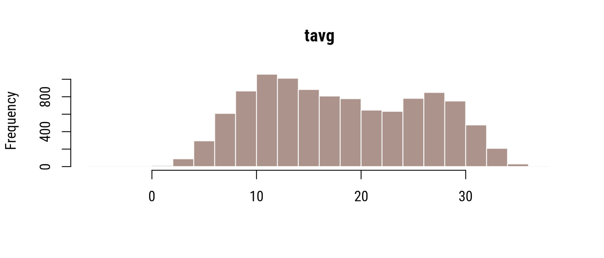
Temperature Minima
2010-2014 and 2015-2020.
prd <- c("2020-02-01", "2020-03-31")
dt[, sdate := as.Date(date)][, year := year(date)]
year(dt$sdate) <- 2020
tmp <- dt[yday(date) %between% yday(prd), .(
Tmin = mean(Tmin, na.rm=T),
GHCN_Tmin = mean(GHCN_Tmin, na.rm=T),
diff_Tmean = mean(Tmean - GHCN_Tmean, na.rm=T),
diff_Tmin = mean(Tmin - GHCN_Tmin, na.rm=T)
), by=.(year, date, sdate)
][, sign := diff_Tmin > 0]
gglabs(tmp[year(date) %between% c(2010, 2014)], aes(x=sdate)) +
geom_line(aes(y=Tmin, color="ERA5 Tmin")) +
geom_point(aes(y=Tmin, color="ERA5 Tmin"), size=.5) +
geom_line(aes(y=GHCN_Tmin, color="GHCN Tmin")) +
geom_point(aes(y=GHCN_Tmin, color="GHCN Tmin"), size=.5) +
scale_x_date(date_labels="%b-%d", breaks="2 days") +
scale_color_discrete(NULL, type=pal2) +
facet_wrap("year", ncol=1) +
xlab(NULL) +
ggtitle("Temperature Mean of Min (°C) -- ERA5 vs. GHCN (19 WS)") +
theme(axis.text.x=element_text(angle=-90))
gglabs(tmp[year(date) > 2014], aes(x=sdate)) +
geom_line(aes(y=Tmin, color="ERA5 Tmin")) +
geom_point(aes(y=Tmin, color="ERA5 Tmin"), size=.5) +
geom_line(aes(y=GHCN_Tmin, color="GHCN Tmin")) +
geom_point(aes(y=GHCN_Tmin, color="GHCN Tmin"), size=.5) +
scale_x_date(date_labels="%b-%d", breaks="2 days") +
scale_color_discrete(NULL, type=pal2) +
facet_wrap("year", ncol=1) +
xlab(NULL) +
ggtitle("Temperature Mean of Min (°C) -- ERA5 vs. GHCN (19 WS)") +
theme(axis.text.x=element_text(angle=-90))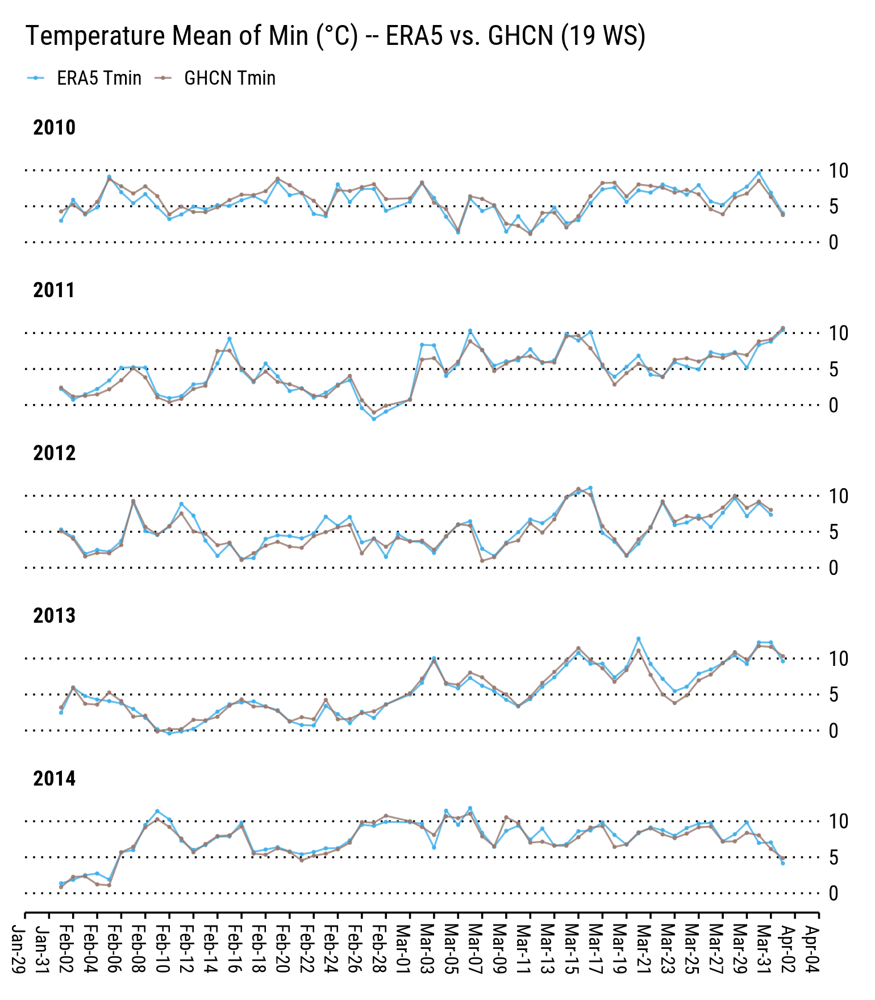
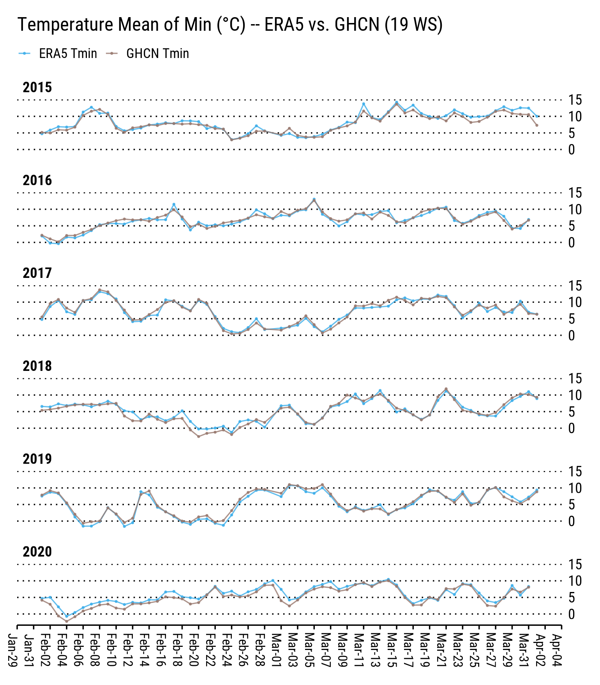
2010-2014 and 2015-2020.
gglabs(tmp[year(date) %between% c(2010, 2014)],
aes(sdate, color=sign)) +
geom_segment(aes(xend=sdate, y=Tmin, yend=GHCN_Tmin), size=.8, lineend="butt") +
geom_point(aes(y=GHCN_Tmin)) +
scale_x_date(date_labels="%b-%d", breaks="3 day") +
scale_color_discrete(NULL, type=pal2,
labels=c("ERA5 ≤ GHCN", "ERA5 > GHCN")) +
facet_wrap("year", ncol=1) +
xlab(NULL) +
ggtitle("Temperature Mean of Min (°C) -- ERA5 vs. GHCN WS") +
theme(axis.text.x=element_text(angle=-90))
gglabs(tmp[year(date) > 2014],
aes(sdate, color=sign)) +
geom_segment(aes(xend=sdate, y=Tmin, yend=GHCN_Tmin), size=.8, lineend="butt") +
geom_point(aes(y=GHCN_Tmin)) +
scale_x_date(date_labels="%b-%d", breaks="3 day") +
scale_color_discrete(NULL, type=pal2,
labels=c("ERA5 ≤ GHCN", "ERA5 > GHCN")) +
facet_wrap("year", ncol=1) +
xlab(NULL) +
ggtitle("Temperature Mean of Min (°C) -- ERA5 vs. GHCN WS") +
theme(axis.text.x=element_text(angle=-90))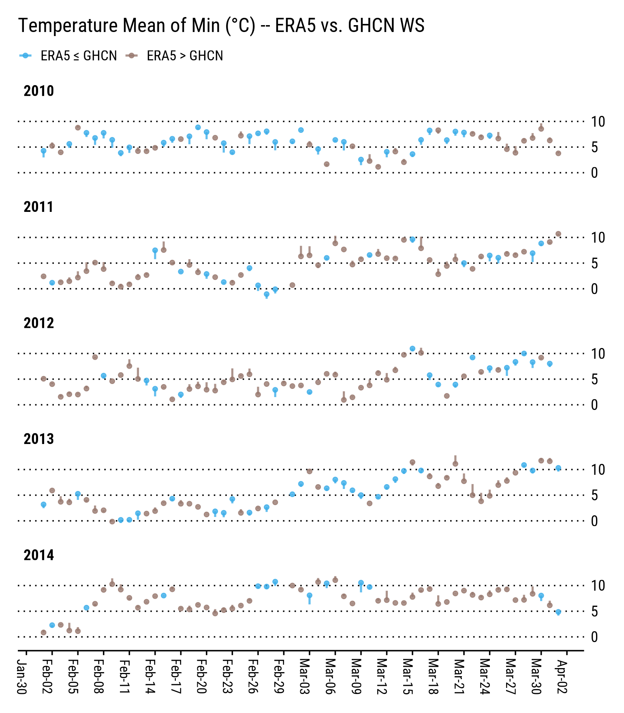
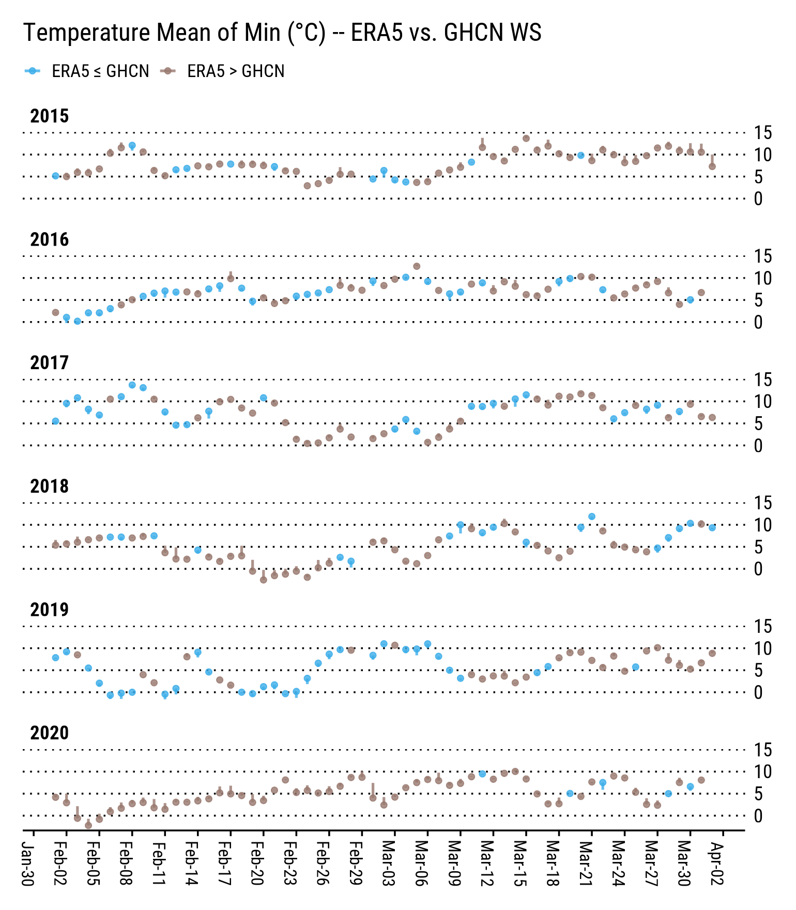
Differences between ERA5 Tmin and GHCN Tmin over risk period:
dt[yday(date) %in% yday(prd), summary(Tmin - GHCN_Tmin)] Min. 1st Qu. Median Mean 3rd Qu. Max. NA's
-5.9080 -1.1880 0.2500 0.2953 1.5979 9.7133 206 Differences between ERA5 Tmin and GHCN Tmin over risk period (GHCN below 0°C):
dt[yday(date) %in% yday(prd) & GHCN_Tmin <= 0, summary(Tmin - GHCN_Tmin)] Min. 1st Qu. Median Mean 3rd Qu. Max.
1.364 1.822 2.350 2.058 2.350 2.405 Differences between ERA5 Tmean and GHCN Tmean over risk period:
dt[yday(date) %in% yday(prd), summary(Tmean - GHCN_Tmean)] Min. 1st Qu. Median Mean 3rd Qu. Max. NA's
-4.5485 -1.7915 -1.1321 -0.9827 -0.1575 1.9854 359 Differences between ERA5 Tmax and GHCN Tmax over risk period:
dt[yday(date) %in% yday(prd), summary(Tmax - GHCN_Tmax)] Min. 1st Qu. Median Mean 3rd Qu. Max. NA's
-4.6174 -1.4994 -0.6568 -0.6119 0.1649 4.7969 204 Correlation summary on temperature minima (all available dates):
tmp <- dt[!is.na(GHCN_Tmin), .(cor = cor(GHCN_Tmin, Tmin, method="pearson"))]
summary(tmp$cor) Min. 1st Qu. Median Mean 3rd Qu. Max.
0.9258 0.9258 0.9258 0.9258 0.9258 0.9258 Correlation summary on temperature minima (GHCN below 0°C, all available dates):
tmp <- dt[!is.na(GHCN_Tmin) & GHCN_Tmin <= 0, .(cor = cor(GHCN_Tmin, Tmin, method="pearson"))]
summary(tmp$cor) Min. 1st Qu. Median Mean 3rd Qu. Max.
0.2952 0.2952 0.2952 0.2952 0.2952 0.2952 ERA5 bias along GHCN ground temperatures:
tmp <- dt[!is.na(GHCN_Tmin), .(
GHCN_Tmean, GHCN_Tmin,
Tmean_bias = GHCN_Tmean - Tmean,
Tmin_bias = GHCN_Tmin - Tmin
)]
gglabs(tmp) +
geom_smooth(aes(x=GHCN_Tmean, y=Tmean_bias, color="Bias (Tmean)")) +
geom_smooth(aes(x=GHCN_Tmin, y=Tmin_bias, color="Bias (Tmin)")) +
geom_hline(aes(yintercept=0), color=pal["dark"], linetype=1) +
geom_vline(aes(xintercept=0), color=pal["dark"], linetype=3) +
scale_color_discrete(NULL, type=pal2) +
scale_x_continuous(n.breaks=10) +
scale_y_continuous(n.breaks=10) +
xlab("GHCN Temp. (°C)") + ylab("ERA5 Bias (°C)") +
ggtitle("ERA5 Temperature Bias vs. GHCN WS (2010-2020)")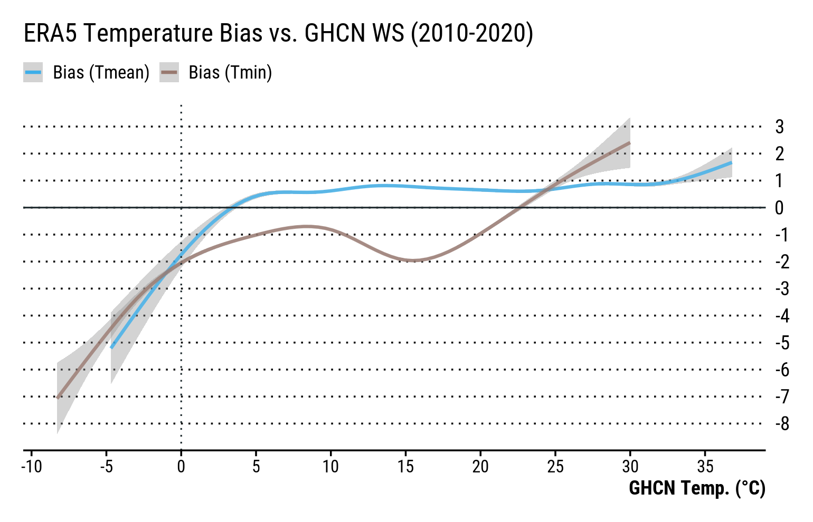
Frost Index
degree_frost <- c(-4, 0)
# Add daily index values
setorder(dt, loc_id, date)
idx <- dt[yday(date) %between% yday(prd), .(
idx = sum(degree_frost[2] - pmin(
fifelse(Tmin < degree_frost[1], degree_frost[1], Tmin), degree_frost[2]), na.rm=T),
idx_ghcn = sum(degree_frost[2] - pmin(
fifelse(GHCN_Tmin < degree_frost[1], degree_frost[1], GHCN_Tmin), degree_frost[2]), na.rm=T)
), by=.(loc_id, year)]tmp <- melt(idx, id.vars=c("loc_id", "year"))
tmp <- tmp[, .(value=mean(value, na.rm=T)), by=.(year, variable)]
gglabs(tmp[variable %in% c("idx", "idx_ghcn")],
aes(year, value, fill=variable)) +
geom_col(position="dodge", color=pal["light"], width=.8) +
scale_fill_discrete(NULL, type=pal2[2:1], labels=c("GHCN FDD", "ERA5 FDD")) +
scale_x_continuous(breaks=2010:2020) +
xlab(NULL) + ylab(NULL) +
ggtitle("Mean FDD across Stations -- ERA5 vs. GHCN (2010-2020)") +
theme(axis.text.x=element_text(angle=-90))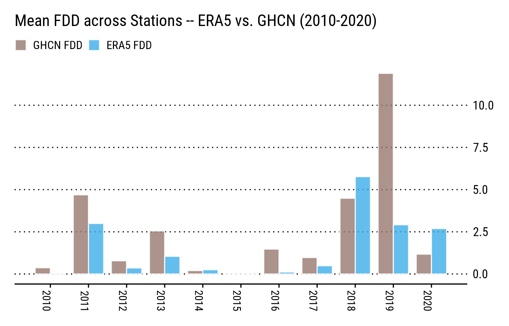
gglabs(idx[idx_ghcn>0], aes(idx_ghcn, idx)) +
geom_abline(linetype=3) +
geom_smooth(aes(color="ERA5 non-adjusted")) +
geom_point(shape="+", color=pal["dark"], size=4) +
scale_color_discrete(NULL, type=pal2[1]) +
xlab("GHCN FDD") + ylab("ERA5 FDD") +
ggtitle("FDD -- ERA5 vs. GHCN (2010-2020)")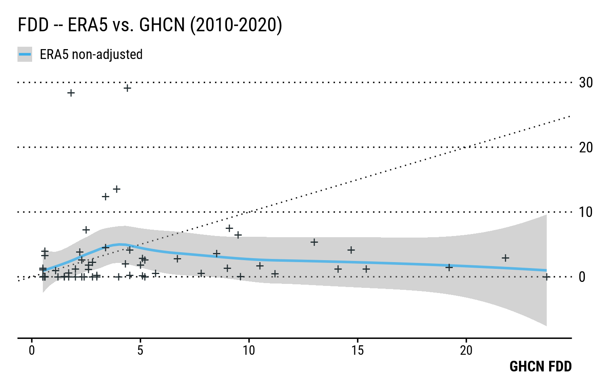
Citation
BibTeX citation:
@online{bacou2020,
author = {BACOU, Melanie},
title = {ERA5-LAND {Temperature} {Validation} {(California)}},
date = {2020-12-02},
url = {https://mbacou.com/posts/2020-12-02-era5-ca/},
langid = {en}
}
For attribution, please cite this work as:
BACOU, Melanie. 2020. “ERA5-LAND Temperature Validation
(California).” December 2, 2020. https://mbacou.com/posts/2020-12-02-era5-ca/.